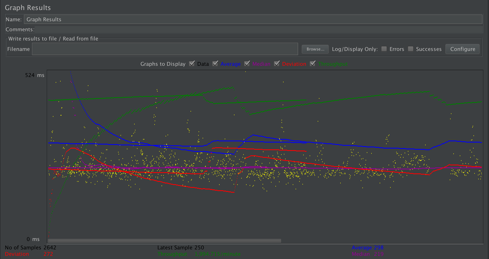
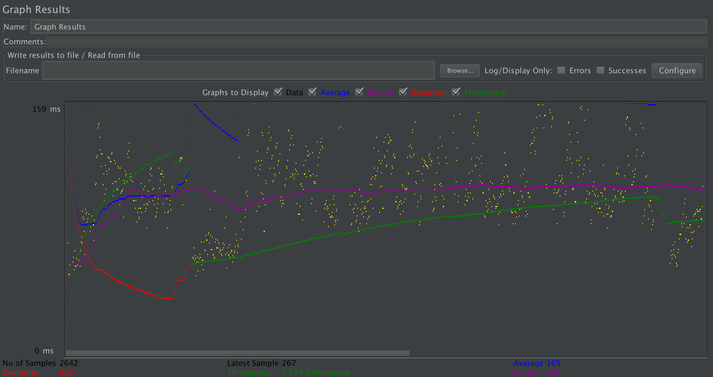
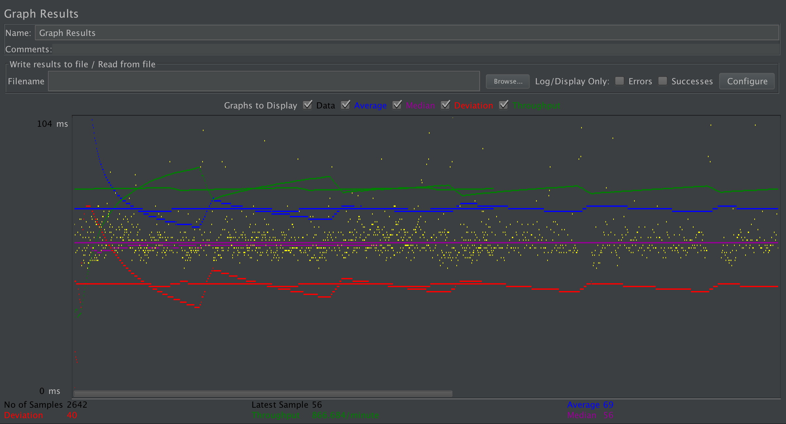
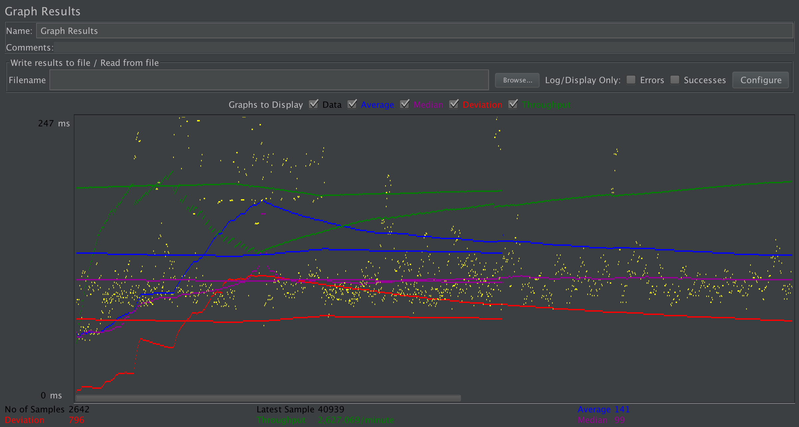
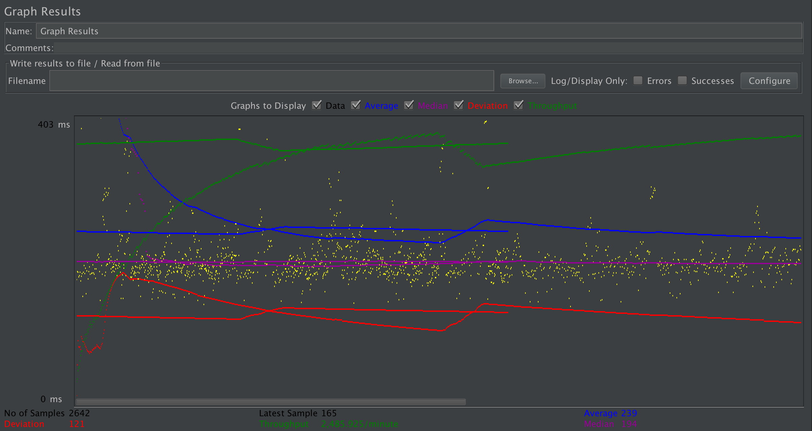
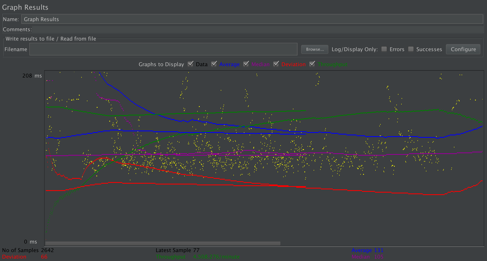
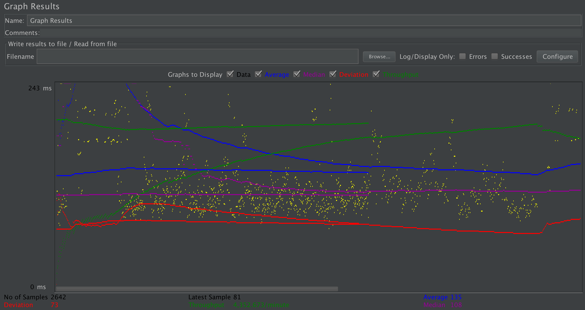
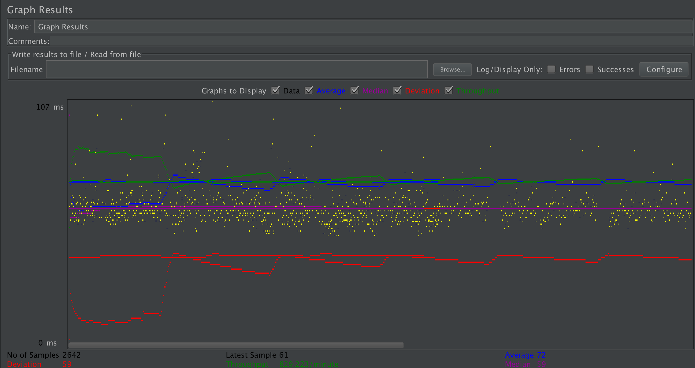
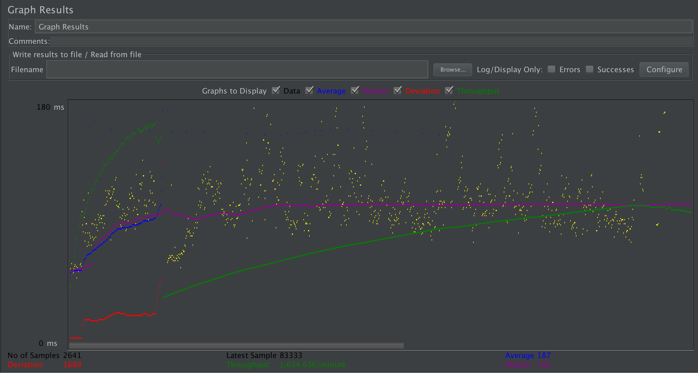

| Single-instance version cases | Graph Results Screenshot | Average Query Time(ms) | Average Search Servlet Time(ms) | Average JDBC Time(ms) | Analysis |
| Case 1: HTTP/1 thread |  | 69 | 0.80 ms | 0.75 ms | With 1 thread we get surprisingly decent time, there is no load balancing overhead or https, this is expected to be decently quick. |
| Case 2: HTTP/10 threads |  | 141 | 1.00 ms | 0.96 ms | 10 threads on the single instance causes it to be slower than the single thread, since there is no load balancing. |
| Case 3: HTTPS/10 threads |  | 239 | 1.22 ms | 1.17 ms | 10 threads with https overhead gives us more downtime doing checks and security measures, hence we get a plain old longer time to complete. |
| Case 4: HTTP/10 threads/No prepared statements |  | 298 | 1.14 ms | 1.10 ms | Without prepared statements we see it is still better than https, but JDBC takes long because of the constant query building and querying. |
| Case 5: HTTP/10 threads/No connection pooling |  | 165 | 3.37 ms | 3.07 ms | Connection pooling is necessary for multiple users as it really does slow it down, especially on one instance the servlet time is very large. |
| Scaled version cases | Graph Results Screenshot | Average Query Time(ms) | Average Search Servlet Time(ms) | Average JDBC Time(ms) | Analysis |
| Case 1: HTTP/1 thread |  | 72 | 1.06 ms | 0.98 ms | We get decent time here with a single thread becase of connection pooling and prepared statements. Since its a single thread there isn't much improvement on JDBC. |
| Case 2: HTTP/10 threads |  | 187 | 0.82 ms | 0.76 ms | 10 threads gives us slightly better time and we get less JDBC processing time. |
| Case 3: HTTP/10 threads/No prepared statements |  | 131 ms | 1.09 ms | 1.02 ms | Without prepared statements we get a higher JDBC time, and generally higher servlet time. |
| Case 4: HTTP/10 threads/No connection pooling |  | 135 ms | 3.04 ms | 2.75 ms | With no connection pooling we can see the real issue of having many requests with a standard connection. Pooling helps a lot. |